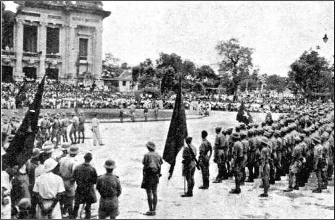
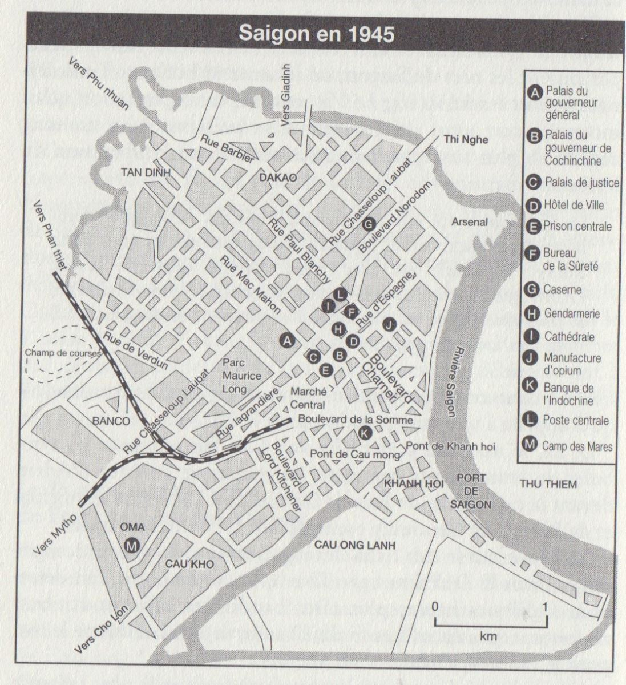
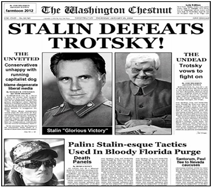
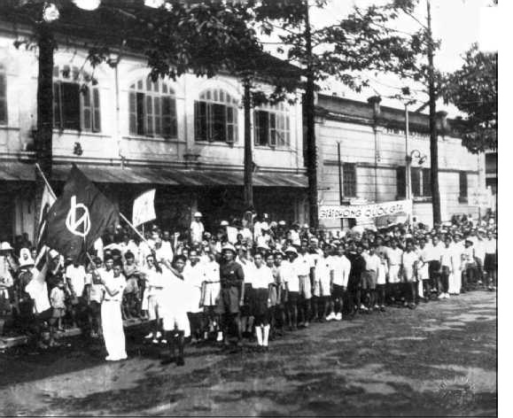
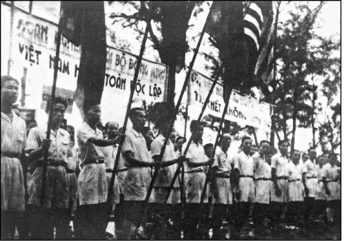
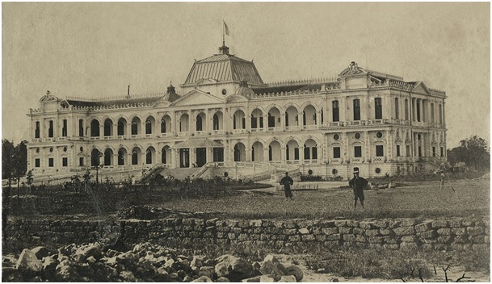
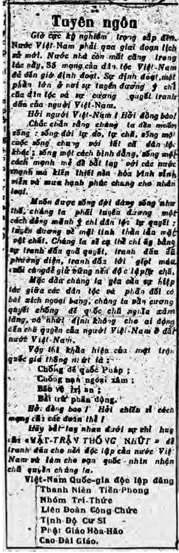

Vào tháng tám năm 1945, 230.000 người Nhật bị lửa bom nguyên tử đốt thiêu trong vòng bốn ngày, tại Hiroshima ngày 6 và tại Nagasaki ngày 9.
Ngày 16, hãng thông tấn Domei phát hành tại Hà Nội chiếu chỉ Nhật Hoàng: Hirohito hạ lệnh thần dân ngưng chiến.
Từ tháng bảy, ‘’ba ông lớn’’, Truman, Winston Churchill và Stalin, họp ởPotsdam, quyết định cho quân Tưởng Giới Thạch chiếm Đông Dương từphía Bắc vĩ tuyến 16, còn ở phía Nam từ vĩ tuyến 16 đóng quân của Mountbatten,để giải giáp quân đội Nhật cùng ‘’hồi phục trật tự và luật pháp’’ ở Đông Dương. Còn De Gaulle thì không quyền ăn nói trong vụ này.

Lãnh tụ hô hào bộ đội Việt Minh trước Rạp Hát Thành Phố Hà Nội
Quân đội Trung Hoa nhập Bắc Kỳ ngày 28 tháng tám nhưng đến ngày 9 tháng chín mới tới Hà Nội. Général Sir Douglas David Gracey-Commandant en chef des forces alliées de débarquement en Indochine Française-Chỉ huy của lực lượng Đồng Minh đổ bộ vào Đông Dương thuộc Pháp Tướng Gracey người Anh chỉ huy tới Sài Gòn ngày 12. Trong thời gian chờ đợi, quân Nhật phải duy trì trật tự.
Hồ chí Minh lấy chính quyền ở Hà Nội và Huếtrước khi quân Trung Hoa tới
Dường như đế quốc Nhật thất bại muốn gây rắc rối cho bọn thắng trận, thế nên Bộ Tham Mưu Nhật không cử động trước tình thếViệt Minh dự bị bạođộng vũ trang sắp vượt lên như chớp nhoáng.
Được tin Nhật thất trận, Hồ chí Minh triệu tập hội nghị quốc gia ở Tân Trào (Thái Nguyên). Hội nghị thành lập một ủy ban giải phóng dân tộc vàphát lệnh Tổng khởi nghĩa nhằm thiết lập ‘’Nước Việt Nam Dân Chủ Cộng Hòa’’, như Việt Minh đã công bố từ tháng năm 1941. Lực lượng du kích ‘’Giải phóng quân’’ tiến về Hà Nội.
Quân đội Nhật đang chiếm đóng Đông Dương không phản ứng. Ngày 16, Nhật thả một số tù chính trị và chuyển giao nhiệm vụ Toàn Quyền Đông Dương cho Khâm Sai Phan Kế Toại, theo thỏa thuận giờ cuối cùng mà TrầnTrọng Kim rốt cuộc giành được trong tay lãnh sự Nhật Tsuchihashi.
Ngày 17, 20.000 người biểu tình tập hợp trước Nhà Hát Lớn Thành Phố Hà Nội. Trên khán đài, lãnh tụViệt Minh hô hào quần chúng giật cờ của triều đình xuống kéo cờ Việt Minh lên. Trùng trùng cờ đỏ sao vàng phất phớikhắp thành phố.
Ngày 18 ‘’giải phóng quân’’ vào Hà Nội, quan khâm sai nhường chỗ cho Ủy ban Việt Minh.
Ngày 19, xe tăng Nhật Bản chạy dọc các đường phố nhưng không can thiệp ở nơi nào. Như vậy, không nổ một phát súng Việt Minh đã chiếmđược hầu hết các công sở hành chính. Quân Nhật nhượng cho họ vũ khí Sở Vệ Binh Đông Dương. Chỉ riêng nhà Ngân Hàng Đông Dương là quân Nhật không đểViệt Minh chiếm. Thế là Việt Minh đã làm chủ mọi công sở ở HàNội thay thế Phan Kế Toại.
Hai ngày sau, các Ủy ban Việt Minh chiếm đóng các nhà hội làng ở Bắc Kỳ, và ngay ở Hà Nội, các nhà trí thức tập họp tại Khu Đại Học lấy danhnghĩa ‘’đại biểu mọi tầng lớp dân chúng’’ gửi điện tín yêu cầu Bảo Đạithoái vị.
ỞHuế ngày 22, Bảo Đại yêu cầuViệt Minh lập một chính phủ mới. Hà Nội buộc Bảo Đại thoái vị trước đã, và dường như thử thách hoàng gia, bènđem bắn Phạm Quỳnh, cựu Thủ Tướng chính phủ Bảo Đại, ở một nơi gầnHuế. Ngày 25, Hoàng Đế trao ấn kiếm triều đình cho đại biểuViệt Minh vàký vào chiếu thoái vị.
Vài hôm sau, Hồ chí Minh phong Bảo Đại chức ‘’Cố vấn tối cao’’, người trước kia là Hoàng Đế thì nay trở thành công dân Vĩnh Thụy.
Trong thời gian đó, phái viên chính phủ De Gaulle là Sainteny tới Hà Nội cùng Thiếu TáMỹ Patti, người chỉ huy cơ quan OSS. Hồ chí Minh bí mật tớiHà Nội ngày 21, gặp Patti và giao cho Võ nguyên Giáp tiếp xúc Sainteny.
Ngày 27, ôngHồ lập chính phủ lâm thời rồi ông Giáp, với tư cách Bộ Trưởng, tuyên bố với Sainteny bấy giờ Việt Minh làm chủ cả đất nước.
Ngày 2 tháng 9 tại Hà Nội, Hồ chí Minh tuyên bố nền Cộng Hòa gọi là dân chủ xứ Việt Nam (Việt Nam Dân Chủ Cộng Hòa) và nền độc lập:
Mỗi người sinh ra đều bình đẳng. Tạo hóa đã ban cho chúng ta những quyền bất khả xâm phạm, đó là quyền sống, quyền tự do vàquyền mưu cầu hạnh phúc. Lời nói bất hủ này được rút ra từ Bản Tuyên Ngôn Độc Lập của Hợp Chúng Quốc Mỹ năm 1776.
Bản Tuyên Ngôn nhân quyền và dân quyền của cuộc cách mạng Pháp năm 1791 cũng tuyên bố: ‘’Mỗi người sinh ra đều bình đẳngtrước pháp luật’’. Đó là những sự thật không thể chối cãi được. Thế nhưng hơn tám mươi năm nay, bọn thực dân Pháp, lạm dụng lá cờcủa tự do, bình đẳng và bác ái, đã xâm phạm đất nước ta, đã áp bứcđồng bào ta. Chúng tôi, những người trong Chính phủ lâm thời,chúng tôi tuyên bố giải phóng hoàn toàn mọi quan hệ với đế quốcPháp, hủy bỏ mọi Hiệp Ước mà người Pháp đã ký về Việt Nam, xóabỏ mọi quyền lợi mà người Pháp đã chiếm đoạt trên lãnh thổ chúngta. Toàn thể nhân dân Việt Nam, muôn người như một, quyết đấutranh đến cùng để chống lại mọi mưu đồ xâm lược của đế quốc Pháp.
Chế độ Cộng Hòa dân chủthợ thuyền và dân cày khởi phát hoạt động
Cùng trong lúc đó, tại Hòn Gai-Cẩm Phả (mỏ than ở Bắc Kỳ nơi tập trung đông nhất và nơi giai cấp vô sản bị bóc lột sâu sắc nhất ở Bắc Kỳ), 30.000thợ mỏ, vẫn còn ở ngoài vòng ảnh hưởng Việt Minh, họ bầu ra những Hộiđồng công nhân, để quản lý việc khai thác mỏ. Họ kiểm soát các công sở ởhuyện, đường sắt, điện tín và áp dụng nguyên tắc trả lương bình quân chomọi người ở mọi cấp bậc lao động chân tay và trí óc. Trật tự mới được duy trì mà không cần đến cảnh sát trong thời gian tồn tại của Công xã thợthuyền ấy - từ cuối tháng 8 đến tháng 11 năm 1945 - trước thái độ ngườiNhật tỏ vẻ thờ ơ. Ban quản trị người Pháp đã bị loại, thợ mỏ duy trì các hoạtđộng kinh tế vùng mỏ, thanh toán nạn mù chữ và cố xây dựng một mức độ nào đó để bảo hiểm xã hội.
Phong trào hoạt động cô lập, quân đội chính phủ lâm thời tới bao vây khu vực. Nguyễn Bình, người chỉ huy, nói với thợ mỏ về sự cần thiết phảiđoàn kết dân tộc và hứa sẽ không đá động tình trạng hiện hiện, nhưng rồi rakhông như thế, vì khi có thể thì anh ta cho bắt giam các đại biểu công nhân như Lan, Hiên, Lê và một người tên S. Rồi anh ta đặt đẳng cấp cán bộ quanliêu mới thay thế các Hội đồng công nhân. Sau ba tháng nỗ lực và sáng tạo,vùng mỏ bị lùa vào khuôn khổ trật tự độc tài cảnh sát quân binh ‘’Cộng hòadân chủ’’ (170). Dân cày hoạt động tự khởi phát cũng không phải là không đáng chú ý:
Tại nhiều trung tâm tỉnh lỵ, trong các làng xóm, chủ yếu tại Bắc Trung Kỳ (Nghệ An, Thanh Hóa) và Bắc Kỳ (Bắc Ninh, Thái Bình), các ủy ban nhân dân ra lệnh chia ruộng đất, tịch thu tài sản nhà giàu. (171)
Hồ chí Minh phản ứng và thuyết phục dân cày. Nông dân vẫn đang nom nớp lo sợ nạn đói, một nạn đói chưa khắc phục, họ vẫn nhớ tới khẩuhiệu của đảng cộng sản Đông Dương năm 1930 ‘’ruộng đất về tay người cày’’, họkhước từ đoàn kết dân tộc với địa chủ và thúc giục các ủy ban nhân dântrao đất cho họ, bởi chính họ biết sản xuất tốt hơn và mùa màng sẽ khôngbị đầu cơ tích trữ.
Vào tháng 11 một thông tư chính phủ gởi các tỉnh ủy nhắc lại rằng ruộng đất trồng trọt sẽ không được phân chia. Tiếp đó chỉ thị số 63‘’huấn lịnh tổ chức chính quyền nhân dân’’ công bố sự thiết lập một hệ thống tổ chức tập trung theo hình kim tự tháp giống như tổ chức ĐảngThanh Niên trước kia, không khác đảng cộng sản Đông Dương cùng Việt Minh:
Ban chấp hành mỗi địa phương sẽ chịu tránh nhiệm thi hành mệnh lệnh của chính phủ và mọi cơ quan cấp trên sẽ kiểm soát các cơ quan cấpdưới trực tiếp của mình (172). Thế đó, mưn đồ Stalin gọi là một ‘’chính phủdân chủ’’.
Miền Nam sôi sục cách mạng trước khi quân lực Anh-Ấn tới
Ngay từ ngày 16 tháng 8.1945 người Nhật bắt đầu rời bỏ việc cai trịtrực tiếp xứ Đông Dương. Fujio Minoda phong Trần Văn Ân, người nhóm Phục Quốc, làm ‘’Chủ Tịch Hội Đồng Nam Kỳ’’, cử Khả Vạn Cân đứngđầu tổ chức Thanh Niên và Thể Thao, thay thế Iida. Một cuộc ‘’Hội thề’’ quy mô lớn sẽ được triệu tập vào ngày chủ nhật trong công viên thànhphố.
Cũng trong ngày 19 tháng 8, theo Hiệp Ước thỏa thuận giữa Tsuchihashi cùng Trần Trọng Kim,Thống Đốc Nam Kỳ Fujio Minoda trao quyền lại cho Giáo Sư Hồ Văn Ngà.
Hồ Văn Ngà, một người nhiệt tâm theo chủ nghĩa quốc gia, là một trong số sinh viên năm 1930 bị trục xuất khỏi Pháp sau cuộc biểu tìnhchống lại án tử hình ở Yên Bái. Là người cùng Bác Sĩ Phạm ngọc Thạch sáng tạo Đảng Quốc Gia Độc Lập ngay sau khi chính quyền Pháp sụp đổđêm 9 tháng 3. Ông mới vừa thành lập, vào ngày 14, một ‘’Mặt TrậnQuốc Gia Thống Nhất’’ gồm cả Đảng Quốc Gia Độc Lập cùng sáu tổ chứcquốc gia khác, Thanh Niên Tiền Phong, Liên Đoàn Công Chức, các Giáo Phái Cao Đài (Phục Quốc), Hòa Hảo, Nhóm Trí Thức và Phái Phật TửTịnh Độ Cư Sĩ.
Trần Văn Ân tung ra tờ nhật báo Hưng Việt ngày 1 tháng 8, đăng tải các thông cáo của Mặt trận cùng những thông tri của các nhóm phái trongMặt trận. Ngày 16, có thông cáo của công chức:
Liên đoàn công chức họp ngày 14 tháng 8 năm 1945 quyết nghị: Hợp tác với Thanh Niên Tiền Phong tổ chức đội tự vệ trong mỗi côngsở; hoàn toàn tín nhiệm Ban trị sự tạm thời và ủy cho ban trị sự Toàn Quyền hành động để đối phó với thời cuộc.
Ngày 17, Mặt Trận Quốc Gia Thống Nhất gởi đăng Bản Tuyên Ngôn vớichữ ký của bảy thành phần Mặt Trận. (Nhóm Tranh Đấu không có mặt,không có chữ ký của họ trong đó).
Ngày 18, báo Hưng Việt đăng nghị quyết nhân viên bưu cục:
Nhân viên Sở Bưu Điện, ngày 16 tháng 8 năm 1945, quyết nghịchống nạn thực dân Pháp toan trở lại...Lệnh của viên lãnh đạo ban ra, bảo phải tổng đình công chẳng hạn, sẽ được ngay toàn thể nhânviên trong sở sẽ tuân theo một cách không miễn cưỡng. Những kẻ trái lệnh sẽ chịu sự trừng trị nghiêm khắc của đội tự vệ. Quyền độcđoán của viên lãnh đạo (nguyên văn!) sẽ mãn khi chánh quyềntrong sở thuộc về người Việt Nam một cách miên viễn.
Ngày 20, đăng lời kêu gọi sau đây:
Liên đoàn công chức Nam Bộ yêu cầu tất cả công chức ở tỉnh gia nhậpvào Thanh Niên Tiền Phong để chung sức đối phó với thời cuộc.
Tổng thư ký Lý Vĩnh Khuôn.
Chính quyền Việt Minh sẽ được thiết lập chính là nhờ Thanh Niên Tiền Phong, một lực lượng tổ chức chỉ huy chặt chẽ và có kỷ luật nghiêm nhặt hỗ trợ quyết định (trong tháng 8 tại vùng Sài Gòn-Chợ Lớn có 200 000người gia nhập, trong đó 120.000 ở các xí nghiệp, theo lời Bác Sĩ Thạch).
Ngày 20, Mặt Trận Quốc Gia Thống Nhất triệu tập biểu tình vào ngày 21,thị oai đề phòng thực dân Pháp trở lại.
Trong thời gian đầu tiên của một chính quyền còn mới mẻ, Giáo SưHồVăn Ngà, ngoài những biện pháp hành chính như việc cử Khả Vạn Cân, cánbộ Thanh Niên Tiền Phong, giữ chức Thị Trưởng vùng Sài Gòn-Chợ Lớn, việc hủy bỏ thuế thân và ra quyết định thả tù chính trị ở Khám Lớn (53 người được thả vào ngày21 tháng 8) cùng ở các trại giam và ngục Côn Sơn. Quyết định sau đó sẽđược Hải Quân Nhật hỗ trợ (từ sau ngày 9 tháng 3, tàu binh Nhật bảo đảmtiếp tế lương thực cho Côn Đảo) chở khoảng một trăm người, không phânbiệt xu hướng, cập bến ở Sài Gòn tại cột cờ Thủ Ngữ (Mât des Signaux)ngày 25 tháng 8, nhưng khi đó chính quyền đã vào tay môn đồ Stalin.
Sài Gòn ngày 21 tháng 8 năm 1945 Cuộc biểu tình Mặt Trận Quốc Gia Thống Nhất
Lần đầu tiên kể từ năm 1926, từ sáng sớm ngày 21 tháng 8, trùng trùng điệpđiệp người tràn ngập trên Boulevard Norodom (Thống Nhất), từ Sở Thú tới Dinh Toàn Quyền, điều hành có trật tự qua các trục lộ chính đi tới khu bình dân tại Cầu ÔngLãnh. Các đảng viên Đảng Quốc Gia Độc Lập, Đoàn Thanh Niên Tiền Phong,tín đồ giáo phái Cao Đài, bước đi dưới lá cờ Quẻ Ly, tượng trưng mới củaTriều ĐìnhHuế, tín đồ giáo phái Hòa Hảo trưng cờ màu tía của họ; tất cả đều có những biểu ngữ có ghi: Việt Nam Độc Lập! Đánh đổ đế quốcPháp!...
Những người xu hướng Trotskij điều hành dưới biểu trưng của Đệ TứQuốc Tế: Ánh chớp Cách Mạngchói lòa quả địa cầu. Họ tham gia biểu tìnhvới Mặt Trận mà không trực thuộc vào Mặt Trận, trái ngược với những lờibóng gió của những người theo phái Stalin.
Nhóm Tranh Đấu và nhóm Liên Minh không hòa lẫn nhau nhưng cùng chung những khẩu hiệu: ‘’Vũ trang nhân dân! Lập chính quyềncông nông!’’. Nhưng nhóm Liên Minh dường như cấp tiến hơn với nhữngbiểu ngữ: ‘’Ruộng đất về tay người cày! Quốc hữu hóa sản nghiệp giaolại thợ thuyền kiểm soát! Thành lập Ủy ban nhân dân! Cách mạng thế giới muôn năm!’’.
Cũng chính vào chiều ngày 21 tháng 8 ấy Việt Minh bắt đầu ra mắt ởNam Kỳ. Nhiều xe có trang bị loa phóng thanh chạy khắp các phố Sài Gòn kêu vang vang: ‘’Ủng hộ Việt Minh! Ủng hộ Việt Minh!’’. Như vậy, một tổchức hầu như không ai nghe biết đã xuất đầu lộ diện và biểu thị qua một tờtruyền đơn như một tổ chức có khả năng nhất trong việc giải phóngViệtNam:
Việt Minh đã từng sát cánh bên cạnh Đồng Minh, đánh Tây chống Nhật. Đối với Nga là bạn. Đối với Tàu như răng với môi. Đối với Mỹ, chủ trương thương mại, nên không có ý xâm lăng. Đối với Anh,nội các Attlee mới lên nắm chính quyền và khuynh tả. Vì vậy, bề ănnói của chúng ta rất dễ dàng...(173)
Chính trong cái triển vọng lạc quan đó - thuần túy là phách lối - ViệtMinh kêu gọi tổ chức cuộc mít ting ngày 28.
Ngày 22, thị trưởng mới Khả Vạn Cân cho kéo sập các tượng đồng biểu trưng cuộc chinh phục thuộc địa, tượng Giám Mục Adran trước cửa Nhà Thờ Đức Bà, (Pigneau de Béhaine còn gọi là Giám Mục Bá Đa Lộc hoặc Giám Mục Adran vì vị này làm Giám Mục Hiệu Tòa Adran) tượng FrancisGarnier trước Nhà hát Tây cùng tượng Rigault de Genouilly ngắm sông Sài Gòn ngó qua Thủ Thiêm.
Cùng ngày hôm đó, Mặt Trận Quốc Gia Thống Nhất triệu tập cuộc họp các đại biểu của bẩy thành phần, nhưng Bác Sĩ Phạm ngọc Thạch, lãnh tụThanh Niên Tiền Phong không tới dự. Vài giờ sau, biểu ngữ, áp phích và truyền đơncông bố kể từ chiều ngày 22 tháng 8, tổ chức Thanh Niên Tiền Phong rời bỏMặt Trận Quốc Gia Thống Nhất để gia nhập Mặt Trận Việt Minh.
Thế là lực lượng có kỷ luật nhất và có ảnh hưởng nhất trong quần chúng, sức mạnh của Mặt Trận Quốc Gia Thống Nhất đã bị phân liệt. Mặt trận sẽ trượt dài theodốc đó. Qua ngày 23, tại số 14 Boulevard de la Somme (Đại Lộ Hàm Nghi), Trụ Sở Thanh Niên Tiền Phong,Hồ Văn Ngà lãnh tụ Mặt Trận, với uy quyền của một khâm sai đại thần, chỉđại diện cho một chính quyền đã giải nhiệm. Ông tiến hành thương lượngvới Việt Minh, lấy cớ rằng để tìm cách đối phó với thời cuộc một cách cóhiệu quả, ôngsẵn sàng rút lui nếu có ai có khả năng hơn đứng ra đảmđương trách nhiệm thay thế ông.
Ngày hôm sau tờ Hưng Việt đăng thông cáo như sau:
Sau một cuộc thương thuyết giữa Mặt Trận Quốc Gia Thống Nhất cùng đại biểu của Việt Minh, hai bên đã thỏa thuận hợp tác cùngnhau. Ba khẩu hiệu sau này: Việt Nam hoàn toàn độc lập, dưới chánh thểCộng Hòa Dân Chủ, chánh quyền về Việt Minh, được đạibiểu Mặt Trận Quốc Gia Thống Nhất tuyên bố sáp nhập vào Việt Minh. Những tổ chứccủa Mặt Trận Quốc Gia Thống Nhất sẽ tham gia vào cuộc biểu tình ngày 25 tháng 8.(Việt Minh được tăng cường lực lượng như thế bèn tổ chức biểu tìnhsớm hơn dự định ba ngày).
Hồ Văn Ngà quyết định như trên phù hợp với nội dung bức điện tín số1855GT của Bảo Đại ngày 22 tháng 8 gửi tới các quan khâm sai ở Bắc vàNam Việt Nam khuyên họ liên hệ với các đại biểuViệt Minh mà Bảo Đạiđã yêu cầu lập một chính phủ mới.
Trong nội bộ đảng cộng sản Đông Dưong, từ ngày 17 người ta thảo luận về việc có thể lấy chính quyền trong thời cơ này. Nguyễn Văn Tạo, Nguyễn VănNguyễn, Bùi Công Trừng do dự, e rằng một quyết định như vậy có phải trảgiá bằng một cuộc đẫm máu như tình hình năm 1940 hay không? Bác Sĩ Phạm ngọc Thạch và Ngô Tấn Nhơn (đảng viên Phục Quốc Liên Minh vớiViệt Minh) lãnh nhiệm vụ thăm dòý đồ người Nhật. Thống Chế Terauchi,chỉ huy lực lượng Đông Nam Á hứa với họ sẽ không can thiệp.

Bản Đồ Sài Gòn 1854
A.- Dinh Toàn Quyền. B.- Dinh Thống Đốc Nam Kỳ. C.- Tòa Án. D.- Dinh Xã Tây. E.- Khám Lớn. F.- Sở Mật Thám. G.- Trại Lính Pháo Thủ. H.- Sở Sen Đầm-Cảnh Sát. I.- Nhà Thờ Đức Bà. J.- Nhà Nấu Thuốc Phiện. K.- Ngân Hàng Đông Dương. L.- Bưu Điện. M.- Đồn Ô Ma.
Để chắc chắn thái độ quân Nhật, Việt Minh thử lấy chính quyền ở Tân An. Trong đêm 22 rạng ngày 23 tháng 8, sau khi hỏi ý kiến của trại quânNhật đóng ở địa phương, Việt Minh gọi tỉnh trưởng, một người Việt doNhật chỉ định từ sau cuộc đảo chính ngày 9 tháng 3, giao Văn Phòng Tòa Bố Tỉnh cho Việt Minh. Sự việc diễn ra không đổ máu.
Yên tâm quân Nhật không ngăn cản, Việt Minh quyết định đứng lên tựxưng chính quyền thực tế ở Nam Bộ.
Chiều ngày 24, những đơn vị tự vệThanh Niên Tiền Phong cùng công chức trang bị vũ khí sơ sài, họ lặp lại kinh nghiệm ở Tân An. Lấy danhnghĩa Việt Minh, họ chiếm ngay công sở chỗ họ đang làm việc - mà Nhậtđã giao người Việt quản lý từ ngày 9 tháng 3. Những đội tự vệ chiếm đóng Dinh Thống Đốc Nam Kỳ, Kho Bạc, Sở Bưu Điện Trung Ương, các Bót Cảnh Sát, Sở Mật Thám, Trạm Cứu Hỏa, Nhà Máy Điện Chợ Quán, Nhà Máy Nước...
Các nhóm vũ trang tránh đột nhập vào Dinh Toàn Quyền, nhà Ngân Hàng Đông Dương, Kho Đạn (Pyrotechnie), bến tàu, sân bay, Sở Ba Son, các nơiấy quân Nhật đóng giữ.
Ngày 25 tháng 8, Việt Minh tự tuyên bố nắm chính quyền
Trong đêm tối nông dân vùng xung quanh Sài Gòn-Chợ Lớn bắt đầu đổ vào thành phố để tham dự biểu tình ngày 25, khi đó diễn đài hí kịch đã bố trídàn dựng xong, đó là công trình của Kiến Trúc Sư Huỳnh tấn Phát (cháu củaHuỳnh Văn Phương): Một cột lớn bốn mặt phủ vải đỏ dựng sồ sộ trước cửaXã Tây Sài Gòn, hướng về các góc đường rực sáng các Đại Lộ Somme và Boulevard Bonard (Đại Lộ Lê Lợi). Những hàng chữ lớn ghi danh sách những người dự chính quyền tựthiết lập (gouvernement de facto) Ủy Ban Hành Chánh Lâm Thời Nam Bộ:
Chủ Tịch kiêm Quân sự: Trần văn Giàu.
Ngoại Giao: Phạm ngọc Thạch.
Nội Vụ: Nguyễn Văn Tạo.
Lao Động: Hoàng Đôn Vân.
Thanh Tra Chính Trị Miền Tây: Nguyễn Văn Tây.
Quốc Gia Tự Vệ Cuộc: Dương bạch Mai.
Kinh Tế: Ngô Tấn Nhơn.
Tuyên Truyền và Thanh Niên: Huỳnh Văn Tiếng.
Tài Chính: Nguyễn Phi Oanh.
Những người thuộc phái Stalin nắm sáu vị trí then chốt trong tay; đảng viên quốc gia thuộc Mặt Trận Quốc Gia Thống Nhất mới vừa nhượngbộ Việt Minh đều hoàn toàn bị loại trừ.
Như vậy, trong vòng một tuần lễ, từ ngày 18 đến 25 tháng 8, Hồ chí Minh cùng phe đảng đã làm chủ cả ba Kỳ. Thời cơ Nhật đầu hàng thúcđẩy Việt Minh thăng tiến và gây hỗn loạn trong phái quốc gia đặt niềmtin vào người Nhật. Tầng lớp tư sản và điền chủ có hơi an tâm vì tư hữutài sản không bị đụng chạm đến. Công nhân và nông dân muốn phá bỏmọi xiềng xích vẫn chưa được báo trước họ sẽ bị chính quyền mới đếnđàn áp.
Ở đây cần nói rõ Trần văn Giàu là ai, người đứng đầu chính phủ tựtuyên bố ở Nam Bộ. Giàu sinh ở Tân An năm 1911-1912, trước có thọgiáo Tạ Thu Thâu, sang Pháp nhập Trung Học Toulouse năm 1928-1929,rồi ghi danh vào Đại Học. Sau đó gia nhập đảng cộng sản Pháp. Bị trụcxuất khỏi Pháp sau vụ Yên Bái, sang Moscou học Trường Stalin; tốtnghiệp trường đó năm 1932 với luận văn về ‘’Vấn đề ruộng đất và nôngdân ở Đông Dương’’ (bằng tiếng Pháp: La question agraire et paysanne en Indochine), thực tập một thời gian trong Hồng Quân (điều này y đãthổ lộ với tác giả năm 1936 khi cùng bị giam tại Khám Lớn Sài Gòn) rồitrở về nước với nhiệm vụ tái lập đảng cộng sản Đông Dương. Ngày 19tháng tư năm 1935, sau Đại Hội Macao, Giàu về Sài Gòn bị bắt. Không biết anh ta khai làm sao mà bồi thẩm Trần Văn Tỷkhiến mật thám bắt 167 đảng viên và cảm tình, sau đó 113 người được thả (174).
Ngày 24 tháng 6 năm 1935 tòa kết án Trần văn Giàu 5 năm tù rồitống ra Côn Đảo ngày 29 tháng 7.
Trong tạp chí Hòa Đồng, Hồ Hữu Tườngkể lại rằng khi các đồng chítrong tù trách cứ Giàu đã quá lỡ lời, Giàu thanh minh như sau:
Mật thám mà đánh tôi chết, thì đảng mất đi một thủ lĩnh. Tôi khainhư vậy, khỏi bị đòn, các đồng chí mỗi người lãnh ít năm tù để trảgiá cái mạng sống của tôi (175).
Được đưa trở về Sài Gòn thời Mặt Trận Bình Dân năm 1936, Giàu bịgiam tại Khám Lớn cho tới mãn hạn tù. Tháng 4 năm 1940, anh ta từ chốigia nhập đảng bộ Nam Kỳ lúc này đang chuẩn bị một cuộc khởi nghĩa.
Sau đó ít lâu y lại bị giam tại trại Tà Lài (Biên Hòa) ở giữa rừng cách SàiGòn 120 km, tại tả ngạn sông Đồng Nai. Giàu nói là đã vượt ngục vàonăm 1941. Anh ta lại xuất hiện vào năm 1944, khi đó viên có mật thámDuchene - trưởng ‘’phòng tình báo Norodom’’, thuộc mạnglưới khángchiến bí mật của phái De Gaulle tại miền Nam - tiếp xúc Giàu. Theo lời kể của Paul Isoart:
Theo viên mật thám chứng kiến, Trần văn Giàu đã nhận phânphát sách báo ‘’trong đó anh ta trình bày những lý do vì sao nhândân Đông Dương phải tin cậy vào nước Pháp dân chủ’’. Anh tacũng sẽ thành lập những nhóm đồ đảng ‘’để sử dụng vào nhữngnhiệm vụ hỗ trợ cho kháng chiến (như tình báo, tiếp tế, phá hoại,giúp đỡ quân nhảy dù, trung lập hóa [thủ tiêu] các phái thânNhật)’’ (176).
Trần văn Giàu chưa hề hở môi công khai về những mối giao thiệp bímật của mình với tên mật thám Duchene cũng như vai trò mà Duchenegiao phó cho anh ta. Khi BernardTastayre phỏng vấn Duchene để chuẩn bị một luận án về ‘’Cuộc cách mạng tháng tám ở Nam Kỳ’’ (năm 1977-1978), Duchene công bố có cung cấp cho Giàu vài khẩu súng lục và mộtmáy in (duplicateur); chi tiết này không thấy gạnh trong luận án, nhưngTastayre đã thuật lại với Bác SĩHồ Tá Khanh khi tham khảo ý kiến ông Khanh để thảo luận án đó.
Năm 1945, Trần văn Giàu chủ động xứ ủy đảng cộng sản Đông Dương Nam Kỳ, thuyết phục Bác Sĩ Phạm ngọc Thạch -lãnh tụ Thanh Niên Tiền Phong - vào Việt Minh, Thạch trở thành trợ thủ của Giàu trên đường lênchính quyền.
Cuộc biểu tình ngày 25 tháng 8.1945 tán thành chính quyền Việt Minh
Tổ chức cuộc biểu tình ngày 25 tháng 8, phái Stalin nhằm mục đích chứng tỏ đa số quần chúng tán thành chính quyền Việt Minh tự công bốlà chính đáng. Việt Minh không phải không biết những cuộc tập hợpquần chúng quy mô lớn sẽ động viên khuyến khích và trù bị tinh thầnbẫy người. Trần văn Giàu tập trung hô hào về niềm khát vọng chung,sâu xa và giản đơn trong lúc đó: Nền độc lập của xứ sở.
Từ sáng sớm tinh mơ toàn thể bình dân Việt ở Sài Gòn, ở các xóm nhà lá xung quanh thành và ở vùng ngoại ô gần đó như Gia Định, Gò Vấp,Thị Nghè, Khánh Hội đổ dồn về trung tâm, nơi đó nông dân do chiến sĩ Đệ Tam huy động đã tới ban đêm từ những vùng nổi tiếng can trườngchống đối như Bà Điểm, Hóc Môn, Đức Hòa và Chợ Đệm. Họ đổ dồn về Boulevard Norodom, sau Nhà Thờ Đức Bà - một bày bố hí trò mới nữa - nơi đã dựng xong một khán đài. Thật là một quang cảnh từ trước chưa hề thấy: Trùng trùng người đông như kiến xôn xao dưới một biển cờ đỏ sao vàng Việt Minh. Không có cảnh sát can thiệp chi cả, và thế là đi cũng không còn sợ ai. Nếu như mỗi người dự biểu tình trong lòng mỗi hy vọng khác nhau, nhưng tất cả đều mong muốn chấm dứt chế độ thực dân. Ai cũng sẵn sàng lao mình vào cuộc chiến đấu tương lai chập chờn không xác định.


Cuộc biểu tình ngày 21 tháng tám 1945 ở Sài Gòn

Thanh Niên Tiền Phong diễn hành dưới khẩu hiệu Hoan Nghinh Phái BộĐồng Minh
Từ trên bục cao diễn đài, Trần văn Giàu, súng sáu cài thắt lưng, đọc to trước quần chúng một bài điện văn vang giọng quốc gia gần như BảnTuyên Ngôn Mặt Trận Quốc Gia Thống Nhất: Kêu gọi toàn dân đoàn kết vìTổ Quốc, vì sự cải thiện đời sống, vì nền độc lập và dân chủ, trong mộtchế độ Cộng Hòa; đó là những điều mà Hồ Văn Ngà đã phác ra trong mộtchế độ đế chế. Giàu nói thêm: ‘’Ngày nay khi mà nhân dân đã côngkhai công nhận chúng tôi, mọi người hãy giúp chúng tôi chống lại nhữngkẻ khiêu khích’’. Y đã nhằm vào ai nếu không là những người xu hướng Đệ Tứ mà chương trình xã hội của họ mang tính chất cách mạng?
Giàu cùng vây cánh là Dương bạch Mai đã thu nạp đảng cướp Bình Xuyên làm cảnh sát và bảo vệ - Bình Xuyên là tên một xóm hẻo lánh vùng Chợ Lớn, sào huyệt nổi tiếng của những kẻ sống ngoài ‘’trật tự xãhội’’, những người vượt ngục...với thủ lĩnh là Lê Văn Viễn, tức Bảy Viễn. Chúng tặng Việt Minh một số súng gươm lấy trộm của Nhật.
Đến đây, chúng ta nhớ lại thái độ cảnh giác của Friedrich Engels trong tác phẩm Chiến tranh nông dân ở Đức:
Khi thợ thuyền Pháp, cứ mỗi lần nổi lên làm cách mạng, viết trêncác tường nhà: ‘’Hãy tru diệt bọn kẻ cắp!’’ và thực tế đã bắn chếtnhiều tên kẻ cắp, thì như vậy không phải là vì họ nhiệt tâm sùngbái tư hữu tài sản, mà đúng là họ nhận định rằng trước hết phảiloại bỏ lũ chúng đi. Tất cả những ai lãnh đạo thợ thuyền mà sửdụng lũ vô lại để làm cảnh vệ hộ thân hoặc sở cậy vào bọn chúng,hành động như thế họ tỏ mình phản bội phong trào.
Bảy Viễn sau đó xung đột với Việt Minh rồi ngả theo quân đội viễnchinh Pháp lùng bắt Việt Minh. Bảo Đại phong Tướng cho hắn năm 1952,chính phủ Pháp thưởng hắn Ngũ Đẳng Bắc Đẩu Bội Tinh năm 1953.
Giữa cuộc biểu tình, nhóm Liên Minh, hoan hô những khẩu hiệu cấptiến Ruộng đất cho người cày! Nhà máy về tay công nhân! Khích độngcách mạng hay phản cách mạng tháng tám năm 1945 nhiệt tính dân chúng. Trong khi mưn đồ Stalin hô vang ‘’Tất cả chính quyền về tay Việt Minh!’’ thì chiến sĩ phái Liên Minh phản ứng lại ‘’Tất cả chính quyền vào tay các ủy ban nhân dân!’’ và hát bài Quốc Tế Ca, không hài hòa chút nào với tiếng hát bài Lên Đàng của Thanh Niên Tiền Phong cảm kích say sưa tầng lớp thanh niên với ‘’chủ nghĩa anh hùng truyền thống ngàn năm của dân Việt’’.

Dinh Toàn Quyền Đông Dương

Tuyên Ngôn Mặt Trận Quốc Gia Thống Nhứt